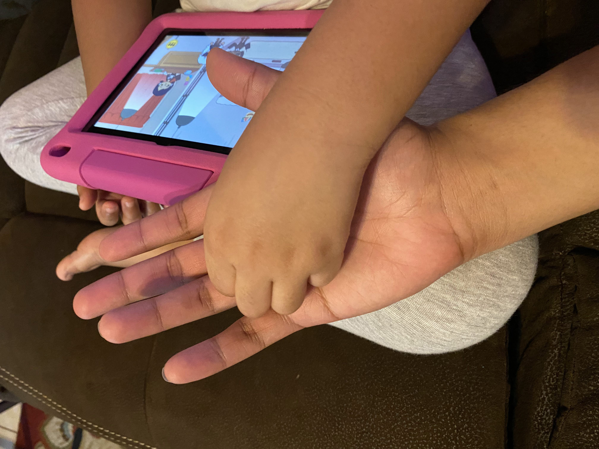
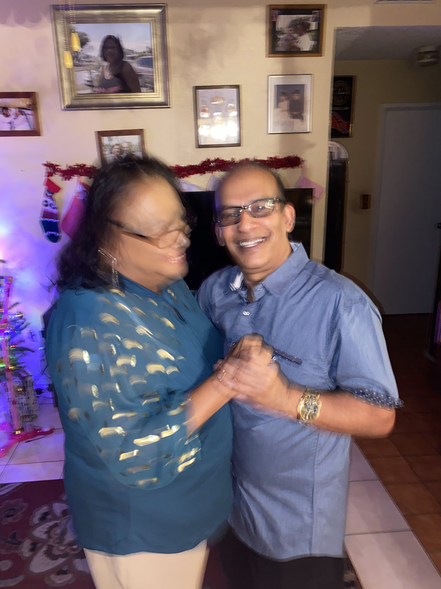

I’ve been resisting grand proclamations.
I came across this TikTok making fun of how “diaspora kids” write about their histories, cultures, and “motherland.” Using my diasporic identity to signal any sort of ethnic credibility or ownership is simplifying and stupid at best, silencing and solipsistic at worst.
I’ve been resisting grand proclamations because singularity is a tool of control.
In order to wield a sword, a smith casts steel into a single shape, hammering it down to become sharper and sharper into one single point. I want to refuse the temptation to become a blade for digestability or traditional art-world success.
Somewhere along the line, I forgot that identities and borders are abstractions. Imagined things. What am I calling back to when I say words like “Trinidad and Tobago” and “India” and “Hindu?"
Whose words are these? Have they not been blades too? Tempered by a Smith’s flame and a hammer to become one thing. Called upon to inflict horrific acts of violence? I don’t want to be a sword, I want to be the sheath.
The holding thing. The carrier bag. The vessel that holds it all and lets them get all mixed up.
In The Argumentative Indian, Amartya Sen suggests that heterodoxy is essential to India’s history and past. The ability to hold, yes, that’s what a country can be right? But I don’t wanna be a country I just wanna be an embrace. Without large hands grasping at even larger fixtures of identity what do I have? Who do I have? What’s left in the smallest parts of me that I can hold onto?
Can I be so lucky as to stumble upon a laugh,

a palm,
a dance,
a heart?